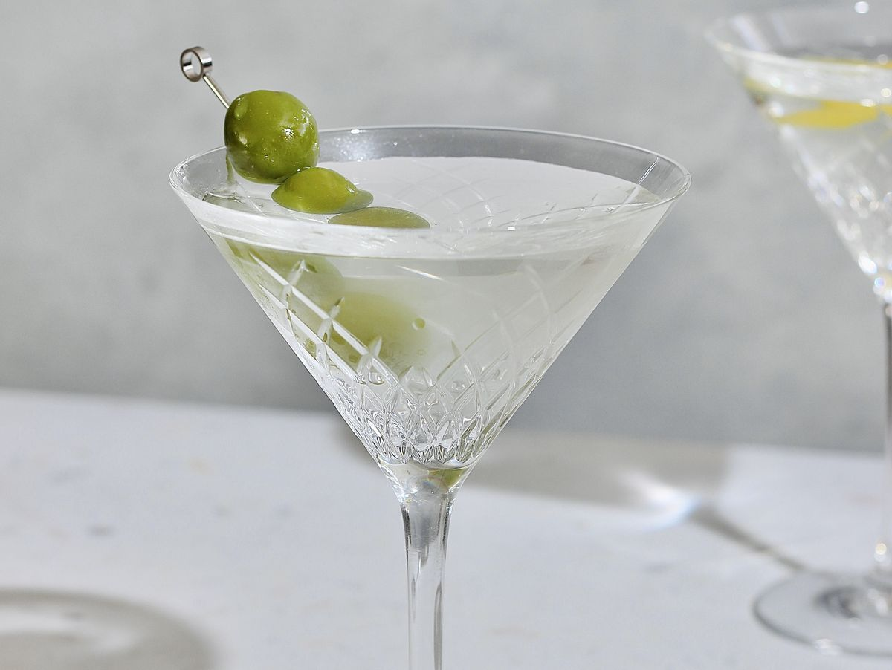

Martini Recipe

Martinis are amazing - especially if they're made the right way, and so is this recipe! Follow the steps to have an amazing drink!
RECIPE
INGREDIENTS:
- 60 ml of your favourite vodka or gin
- 15 ml dry vermouth (about a tablespoon
ice lemon peel, or an olive to garnish)
STEPS:
- Fill your cocktail shaker or tall glass with ice, and add your two alcohols.
- Stir using a tall cocktail spoon for about 30 seconds.
- Strain into a chilled martini glass and serve with your chosen garnish.
- Yes, that's literally the entire recipe
- ENJOY!